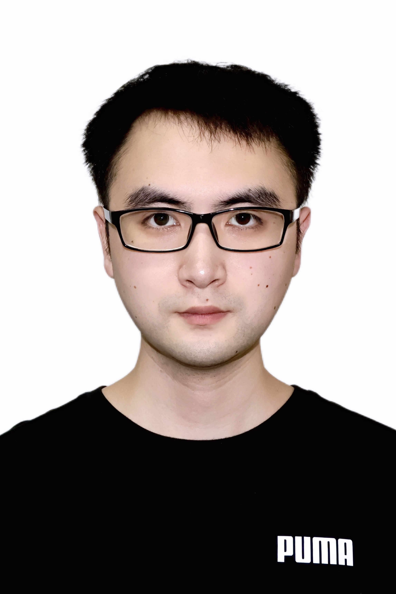
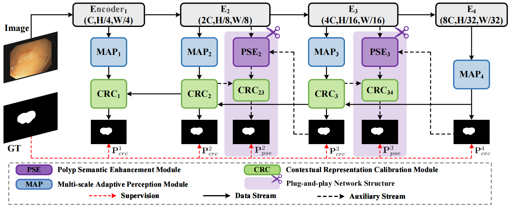
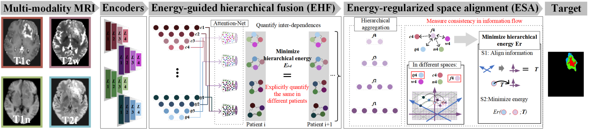
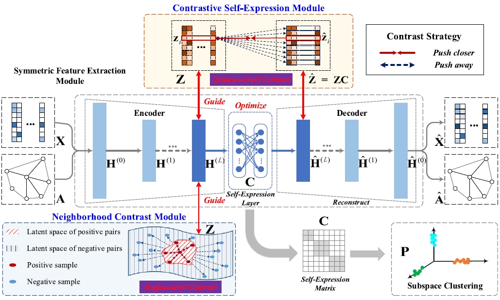
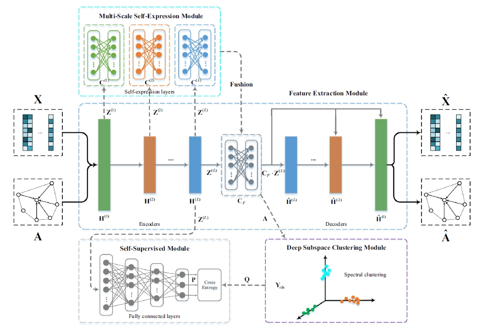

|  |
I am now joining the Intelligent Visual Analytics Lab (IVAL) at Mohamed bin Zayed University of Artificial Intelligence (MBZUAI) as a visiting Ph.D. student, under the guidance of Prof. Fahad Khan and Dr. Nian Liu. I am also a 3-rd year Ph.D. student at the Key Laboratory of New Generation Artificial Intelligence Technology and Its Interdisciplinary Applications (Southeast University), Ministry of Education, under the guidance of Prof. Guanyu Yang. |
|  |
Polyp segmentation via semantic enhanced perceptual network. |
|  |
Energy-induced Explicit quantification for Multi-modality MRI fusion. |
|  |
Neighborhood contrastive representation learning for attributed graph clustering. |
|  |
Multi-scale graph attention subspace clustering network. |